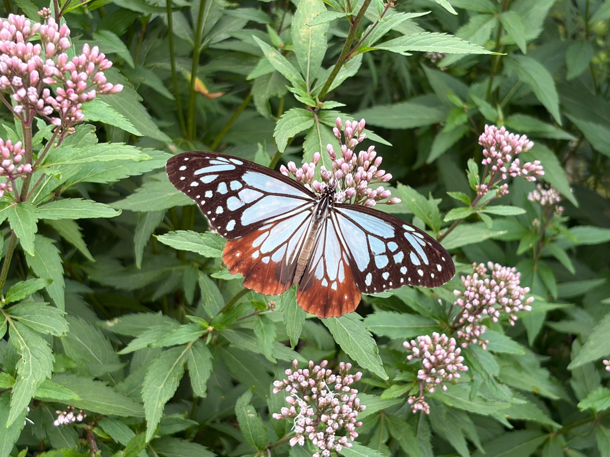
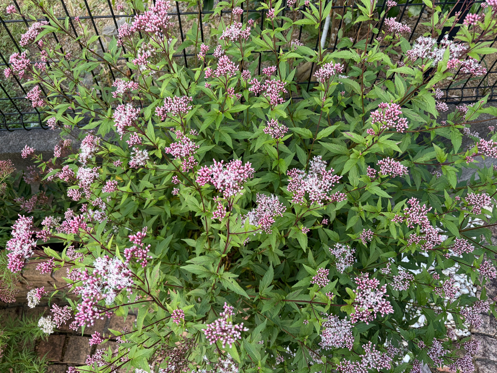
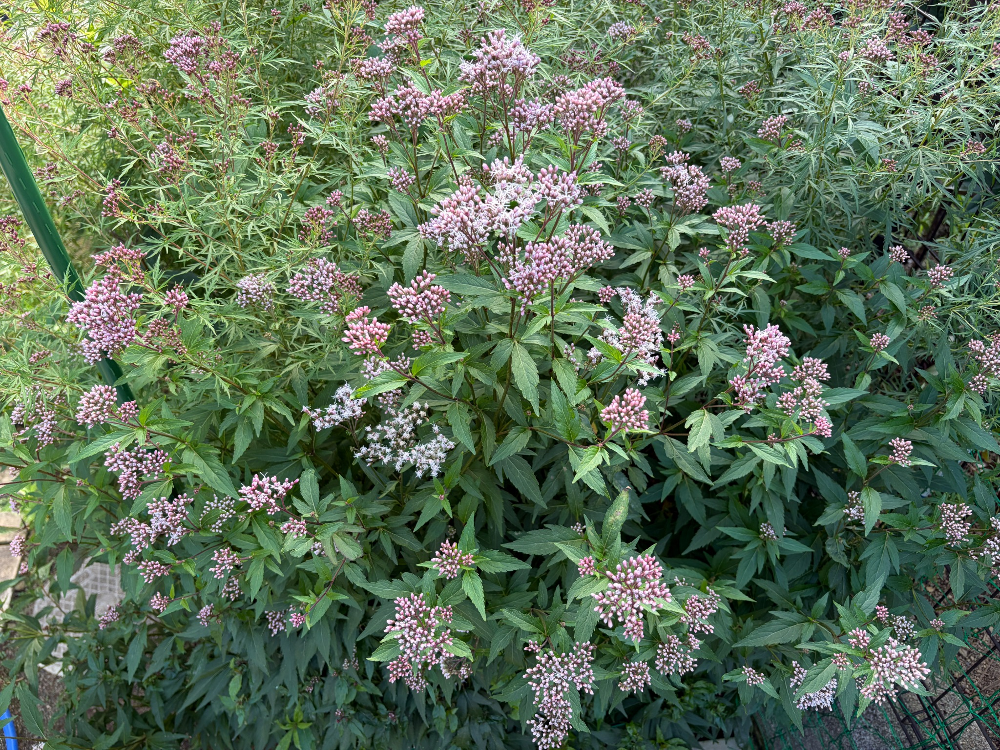

2026/10/12 多くの蕾を残しながら開花が進み、アサギマダラが吸蜜に訪れました
10月12日のフジバカマ（原種系）は、枝先にピンク色の蕾を数多くつけ、その間に白い糸状の花が広がっています。株全体が一斉に咲きそろった状態ではありませんが、あちこちの花房で開花が見られ、蕾のまとまりと、ふんわりと開いた花の両方を楽しめる姿になっています。
この日は10：30頃に2匹のアサギマダラが飛来しました。吸蜜の中心になっていたのは満開の白フジバカマ（原種系）でしたが、こちらのフジバカマ（原種系）にも訪れ、小さくて翅がきれいな個体が蜜を吸う姿を残すことができました。まだ蕾が多い中でも、すでに開いている花がアサギマダラの吸蜜場所になっていたことが、うれしく感じられます。
アサギマダラがとまった花房にも、蕾がたくさん残っています
近くから見ると、アサギマダラがとまっている花房には、細長いピンク色の蕾が密に集まっています。蕾の先端は淡く、根元に近い部分にはやや濃い色があり、ひとつひとつの形がよく分かります。その間から白い糸状の部分が伸び、小さな花が開いています。
アサギマダラの周囲を見ても、花房全体が開ききっているわけではありません。まだ閉じた蕾が多く、その一部で開花している状態です。花房にアサギマダラがとまっていると、その花房が十分に咲いているようにも感じますが、近くで見ると、開いた花はたくさんの蕾の中に混じっています。
周りの枝先にも、同じようにピンク色の蕾がまとまっています。白い糸状の部分が少しだけ見える花房もあれば、まだ蕾の形がはっきり残っている花房もあります。ひとつの花房の中でも、隣り合う花房同士でも、咲き具合には違いがあります。
アサギマダラが蜜を吸っている姿を見ると、株全体が満開になる前から、開いた花が利用されていることが分かります。これまで蕾や花の変化を見てきましたが、この日は、その花とアサギマダラのつながりを目の前で感じられました。

株のあちこちに、白くふんわりした花房が見られます
少し離れて見ると、上へ伸びた茎の先だけでなく、横へ分かれた枝や手前へ伸びた枝にも、大小の花房がついています。高い位置から低い位置までピンク色のまとまりが広がり、その中に白い糸状の花が点在しています。
よく開いている花房では、白い糸状の部分が絡み合うように広がり、輪郭が柔らかく見えます。蕾だけの花房は粒が集まったような引き締まった姿ですが、開花した部分はその外側までふんわりと広がっています。ピンク色の蕾の上に白い花が重なり、花房ごとの違いが分かりやすくなっています。
白い花が目立つ場所は一か所に限られていません。株の左側や中央、右側、手前の枝など、離れた場所にも開花した花房があります。ただ、そのすぐ隣には蕾の多い花房もあり、株の一部分がまとまって咲き終わってから次へ進むというより、それぞれの枝先で少しずつ開いているように見えます。
花房の大きさと開花の進み具合も、必ずしもそろっていません。大きくまとまった花房でも蕾が多く残るものがあり、比較的小さな花房でも白い糸状の部分が広がっています。高い枝先だから先に咲くというわけでもなく、中ほどや低い位置にも、よく開いている花房があります。
今の株は、花房の数が多く、見た目にもにぎやかです。ただ、ピンク色のまとまりの多くはまだ蕾で、すべてが開いた花ではありません。花房がたくさんあることと、株全体が満開になっていることは、分けて見ておきたいと思います。

別の角度から見ても、開花の進み方には差があります
別の方向から見ると、中央の上寄りには、白い糸状の花がまとまって広がった花房が見えます。中央より左下にも開花した部分があり、その周りを、まだ蕾の多い花房が囲んでいます。
上へ伸びた枝先にはピンク色の蕾が密に集まった花房が多く残り、手前や左右へ広がった枝にも、これから開く蕾が見られます。一方、枝葉の間には白く開いた花房があり、見る方向によって、蕾が多く感じられたり、開いた花が目立ったりします。
ひとつの花房でも、白い糸状の部分が広がる場所と、蕾がまとまっている場所が隣り合っています。花房全体が同時に開くのではなく、その中の小さな花が少しずつ開いているようです。この違いが重なることで、株全体にも開花のばらつきが出ているのだと感じます。
蕾が残っているからといって、開花が進んでいないわけではありません。実際に白い花が広がっている場所は各所にあります。それでも、今はまだ、開いた花とこれから咲く蕾が混在する途中の姿です。十分に咲いている花房がある一方で、これからの変化を楽しみにできる花房も多く残っています。

葉の緑が残り、枝先の花房を支えています
花の下には緑の葉が多く残り、茎に沿って何段にも重なっています。赤紫色を帯びた茎が枝分かれし、その先に大小の花房をつけています。葉の間から花房が立ち上がり、株全体に厚みがあります。
一部の葉には小さな穴や色むら、葉先の傷みが見られますが、全体として緑が多く残っています。花が咲き始めたことで葉が一斉に黄ばんだり、株全体が大きくしおれたりした姿には見えません。
花房だけを見るとピンク色と白色の変化が目に入りますが、その下に葉がしっかり残っていることも、今の株の特徴です。枝葉が茂った中に多くの蕾と開いた花があり、秋の開花が続いている姿を感じます。
10月4日から8日間を経ても、まだ多くの蕾が残っています
10月4日は、株全体にピンク色の蕾が数多くつき、一部の花房で白い糸状の花が広がっていました。まだ蕾が主体で、その中に開花した花房が点在する段階として記録しています。
8日後の10月12日も、ピンク色の蕾は多く残っています。一方で、白い糸状の部分がまとまって広がる花房が各所に見られ、蕾の間で開花が続いています。前回から株全体が一気に咲きそろったというより、花房ごとの違いを残しながら、少しずつ咲き進んでいる印象です。
今の姿を見ると、蕾がついてから株全体が咲きそろうまでには、ある程度の時間がかかるのだと感じます。先に開く花房と、まだ蕾を多く残す花房があり、その間にも、同じ花房の中で新しい花が開いているように見えます。
まだ蕾が多いので、株全体を満開と呼ぶには早いと思います。ただ、白い花が広がった花房では、開花した姿を十分に楽しめます。私には、蕾の多さを残しながら、開いた花の存在感が出てきている状態に見えます。
白フジバカマとの咲き具合の違い
同じ日の白フジバカマ（原種系）は、白い花房が株の広い範囲で目立ち、庭で眺めた印象としては満開でした。近くではまだ蕾が残る花房もあり、先に咲いた部分には薄茶色や褐色の変化も見られましたが、全体としては開いた花がよく目立つ姿になっていました。
それに比べると、こちらのフジバカマ（原種系）は、まだピンク色の蕾のまとまりが目立ちます。白い糸状の花が広がった花房はあるものの、これから開く部分が多く残り、わが家では白フジバカマの方が開花の進んだ姿を見せています。
同じ庭で育てていても、同じ日に同じ咲き具合になるわけではないことがよく分かります。白フジバカマでは、よく開いた花と咲き進んだ部分が重なり、こちらでは、多くの蕾と開き始めた花、よく開いた花房が重なっています。それぞれに違う段階の秋の姿が見られます。
この日のアサギマダラの吸蜜は、主に満開の白フジバカマで見られました。開いた花が多く、吸蜜する場所を見つけやすかったのかもしれません。ただ、こちらの原種系でも蜜を吸っていたので、白フジバカマだけを利用していたわけではありません。
花の色や種類の好みだけで決まったのか、それとも、その日の咲き具合が関係していたのかは分かりません。今後、こちらの原種系でさらに開花が進んだときに、アサギマダラがどのように訪れるのかも見ていきたいと思います。
咲きそろう前の花にも、待っていたアサギマダラが訪れました
今のフジバカマ（原種系）は、まだ多くの蕾を残しています。それでも、開いた花にはアサギマダラが訪れ、蜜を吸う姿を見せてくれました。満開になるのを待つ間にも、すでにアサギマダラの吸蜜場所として役立っていることが、何よりうれしく感じられます。
これまで、枝葉が茂る様子、蕾がつく様子、ピンク色に色づく様子、白い糸状の花が開く様子を見てきました。その先に、育ててきた花でアサギマダラが蜜を吸う姿を見ることができ、庭での観察に新しい楽しみが加わりました。
これからは、残っている蕾がどのように開いていくのか、白くふんわりした花房がどこまで広がるのかを見ていきたいと思います。白フジバカマとの咲く時期の違いも楽しみながら、花の変化と、そこを訪れるアサギマダラの姿を引き続き記録していきます。
原種系が満開に近づくこれからも、アサギマダラの飛来を楽しみに
フジバカマ（原種系）には、まだピンク色の蕾がたくさん残っています。この蕾がこれから開き、白い糸状の花が株全体に広がっていけば、アサギマダラが蜜を吸える花も増えていくのではないかと期待しています。
10月12日は、満開の白フジバカマが吸蜜の中心になっていました。一方、こちらの原種系でも、小さくて翅がきれいなアサギマダラが蜜を吸う姿を見られました。まだ蕾が目立つ段階でも実際に吸蜜していたので、これからさらに花が開いたときの様子が楽しみです。
今の原種系を見ると、よく開いている花房の隣にも、これから咲く蕾がまとまっています。すべてが一度に咲くのではなく、花房ごとに少しずつ開いていくのであれば、アサギマダラが吸蜜できる花が、時期をずらしながら残っていくのかもしれません。満開になった一日だけでなく、満開へ向かう途中も、その後も、開いている花がある間は庭を見ていきたいと思います。
白フジバカマでは、すでに開いた花の一部に薄茶色や褐色の変化が見られています。それに対して、こちらの原種系にはまだ多くの蕾が残っています。白フジバカマが先に咲き進み、その間にこちらの原種系が開いていけば、庭全体として花がある期間が続くのではないかと感じます。
同じ時期にすべてが満開になる姿もきれいだと思いますが、咲く時期に違いがあることで、アサギマダラが訪れる時期を少し広く受け止められるのかもしれません。今は、その開花のずれも楽しみに感じられます。
ただ、原種系が満開になれば必ずアサギマダラが来る、あるいは、花が増えれば飛来する数も増えるとまでは言えません。庭に花があっても、近くをアサギマダラが通るかどうか、その日の天候や移動のタイミングなどによって、訪れる様子は変わると思います。花の咲き具合は、飛来への期待につながる一つの条件として見ておきたいと思います。
それでも、今回は2匹のアサギマダラが実際に庭を訪れ、白フジバカマだけでなく、こちらの原種系でも蜜を吸ってくれました。小さい個体は約6時間にわたって滞在し、花を利用していました。育ててきたフジバカマがアサギマダラの吸蜜場所になったことは、これからの開花を待つうえでも、大きな楽しみになっています。
次にアサギマダラが訪れたときには、白フジバカマとこちらの原種系のどちらで長く吸蜜するのか、開いた花が増えるにつれて原種系を訪れる様子が変わるのかも、じっくり見てみたいと思います。今回、白フジバカマが吸蜜の中心だったのは、花の種類による違いだけでなく、その日の開花状況も関係していたのかもしれません。こちらの原種系が満開に近づいたときの姿を見ることで、また新しい気づきがあるかもしれません。
再び訪れるのが今回のアサギマダラなのか、別のアサギマダラなのかは、見ただけでは分からないこともあると思います。それでも、また花にとまり、蜜を吸う姿を見られたらうれしいです。残っている蕾が開いていく様子を記録しながら、これからもアサギマダラの飛来を楽しみに、庭の花を見ていきます。